ระยะทางสูงสุด NEDC ①
Premium · Dynamic 300 กม.
100% ELECTRIC
BYD ATTO 1
MY URBAN MY EV
เลื่อนเพื่อเปิดหนังสือ
BYD ATTO 1
01 · PERFORMANCE
MY URBAN
MY EV
รถยนต์ไฟฟ้าขับเคลื่อนล้อหน้า มอเตอร์ซิงโครนัสชนิดแม่เหล็กถาวร (PMS) พร้อม BYD Blade Battery
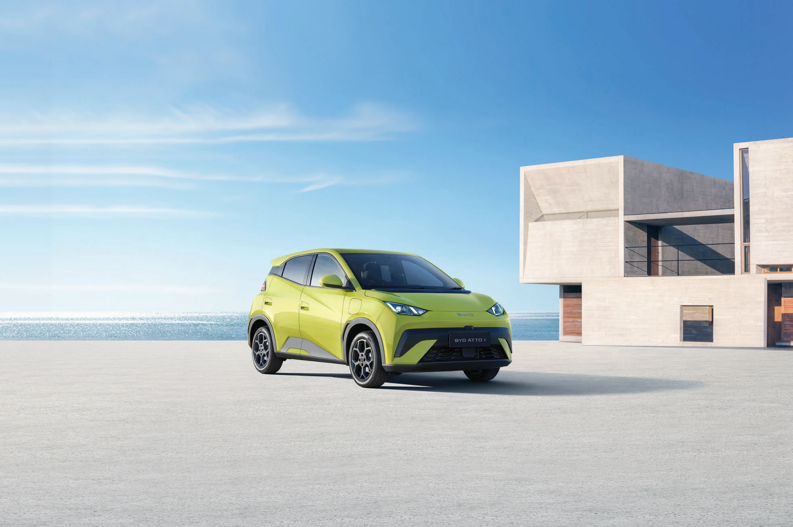
กำลังสูงสุด · ทุกรุ่น
แรงบิดสูงสุด · ทุกรุ่น
BYD Blade Battery
Premium · Dynamic 30.08 kWh
อัตราเร่ง 0-50 กม./ชม.
ทุกรุ่น
DC CCS 2 สูงสุด
Premium · Dynamic 30 kW
ECO / Normal / Sport · ขับเคลื่อนล้อหน้า · AC Type 2 สูงสุด 6.6 kW
ตัวเลขไฮไลต์หน้า 2 ของโบรชัวร์ (380 KM, 38.88 kWh) เป็นของรุ่น Premium · ระยะทางจริงขึ้นอยู่กับพฤติกรรมการขับขี่ น้ำหนักบรรทุก และสภาพการจราจร ①
02 · EXTERIOR
MY DESIGN
MY STYLE
ไฟหน้าดีไซน์สปอร์ต เสา C ลายผลึกน้ำแข็ง และไฟท้ายแถบ LED ยาวตลอดแนว
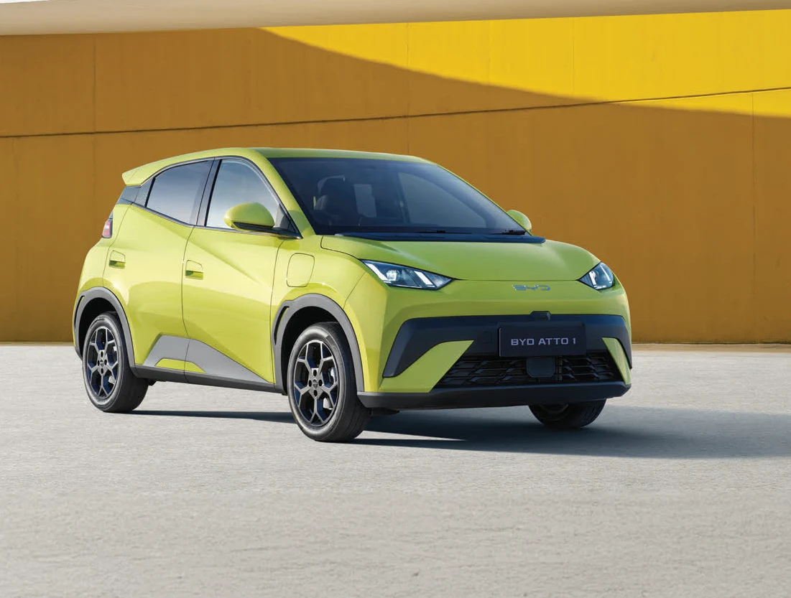
BYD ATTO 1MY DESIGN MY STYLE
ไม่ใช่แค่รถ...แต่คือโหมดความสนุกของชีวิตในเมือง ที่ทำให้การขับขี่ทุกที่กลายเป็น “สนามเด็กเล่น” ของคุณ
03 · INTERIOR
MY DRIVE
MY SMART LIFE
คอนโซลหน้าดีไซน์ Wave Shape เพิ่มจังหวะความสนุกอย่างมีสไตล์
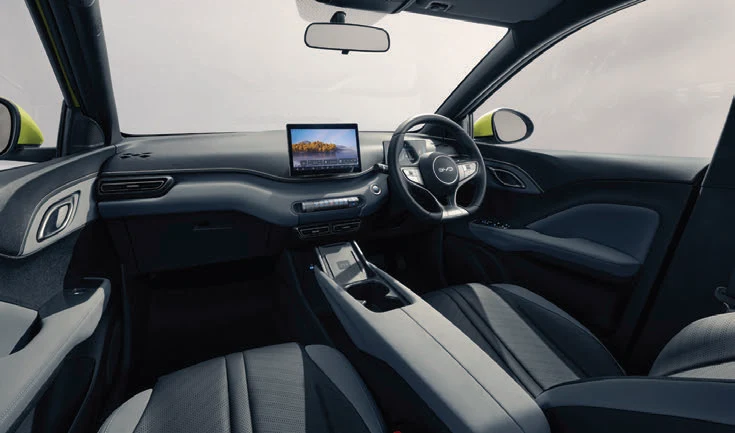
BYD ATTO 1Wave Shape
คอนโซลหน้าดีไซน์ Wave Shape เพิ่มจังหวะความสนุกอย่างมีสไตล์ · หน้าจอสัมผัสระบบมัลติมีเดีย 10.1 นิ้ว ทุกรุ่น
MY DRIVE MY SMART LIFE
ใช้ชีวิตสุดสมาร์ท กับนวัตกรรมที่ใส่มาเต็มคัน เพื่อชีวิตอีกขั้นของการเดินทาง
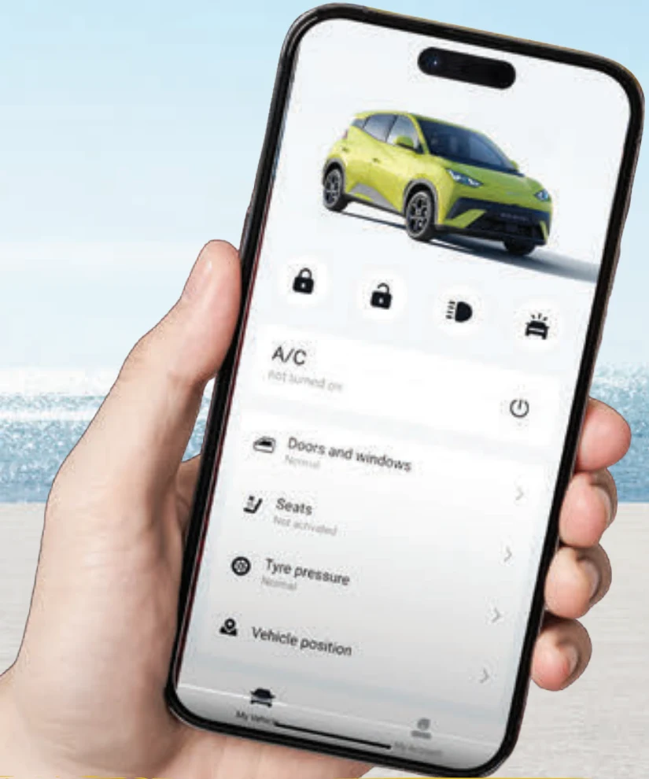
BYD SUPER APP
ควบคุมรถดั่งใจ ผ่านสมาร์ทโฟน
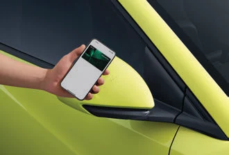
BYD Digital Key
ปลดล็อกรถง่าย ๆ ทุกรุ่น ④
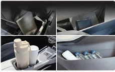
ช่องเก็บของรอบคัน
ช่องเก็บของรอบห้องโดยสาร
04 · ADAS
SUPER INTELLIGENT
ASSISTANT
Advanced Driver Assistance Systems
ภาพสาธิตแนวคิดของระบบ
FCW
Forward Collision Warning
ระบบช่วยเตือนการชนด้านหน้า
Premium
รายการและการติดตั้งอ้างอิงโบรชัวร์หน้า 3-4
ระบบช่วยขับขี่ไม่สามารถทดแทนความรับผิดชอบของผู้ขับขี่ต่อยานพาหนะได้
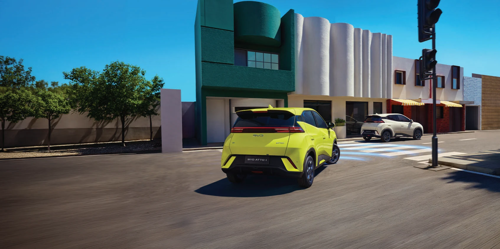
SAFETY
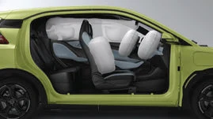
6 Airbags
ปกป้องรอบคัน · ถุงลมด้านข้างคู่หน้าเฉพาะ Premium
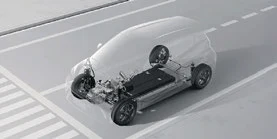
e-Platform 3.0
แพลตฟอร์มที่ยกระดับการขับขี่
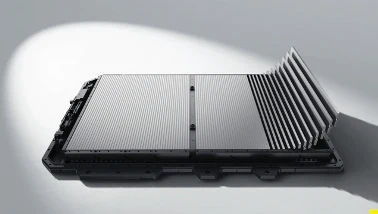
BYD Blade Battery
แบตเตอรี่ที่ปลอดภัยระดับโลก
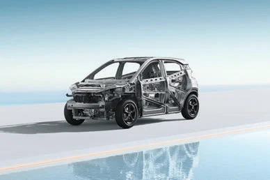
High-Strength Body Structure
โครงสร้างแข็งแรง ทนทาน
05 · SPECIFICATIONS
FIND YOUR
ATTO 1
เปรียบเทียบ Dynamic และ Premium
3,925ความยาว / มม.
1,720ความกว้าง / มม.
1,590ความสูง / มม.
2,500ฐานล้อ / มม.
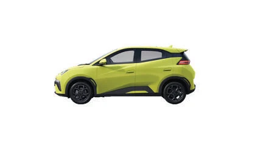
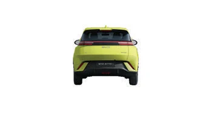
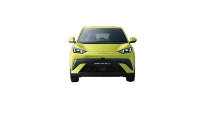
อุปกรณ์มาตรฐานทั้งหมด
● มีอุปกรณ์ · — ไม่มีอุปกรณ์ · ค่าที่เหมือนกันรวมช่องตามโบรชัวร์
หมายเหตุจากโบรชัวร์
- ระยะทางวิ่งด้วยไฟฟ้าสูงสุดอาจปรับเปลี่ยนได้ตามปัจจัยต่าง ๆ เช่น พฤติกรรมการขับขี่ของแต่ละบุคคล น้ำหนักบรรทุก สภาพการจราจร และอื่น ๆ ระยะทางที่ระบุเป็นเพียงตัวเลขประมาณการสำหรับอ้างอิงเท่านั้น
- Bluetooth® เป็นเครื่องหมายการค้าจดทะเบียนของ Bluetooth SIG, Inc. ความเข้ากันได้ในการใช้งานและฟังก์ชันการทำงานอาจแตกต่างกันไปตามอุปกรณ์ที่เชื่อมต่อ
- Apple CarPlay® เป็นเครื่องหมายการค้าจดทะเบียนของ Apple Inc. จำเป็นต้องเชื่อมต่อโดยอุปกรณ์ที่รองรับการทำงานและใช้สาย USB · Android Auto™ เป็นเครื่องหมายการค้าจดทะเบียนของ Google Inc. ต้องใช้ร่วมกับอุปกรณ์ที่รองรับ แบบไร้สายต้องใช้ร่วมกับแพ็กเกจอินเทอร์เน็ตที่มีประสิทธิภาพ รองรับ Wi-Fi 5 GHz และระบบปฏิบัติการเวอร์ชันล่าสุด
- BYD Digital Key สำหรับอุปกรณ์ระบบปฏิบัติการ iOS และ Android ที่รองรับ iPhone, Samsung และ Google Pixel™ ตรวจสอบรุ่นที่รองรับได้ใน BYD Application หรือการตั้งค่า BYD Digital Key บนหน้าจอสัมผัสระบบมัลติมีเดียของตัวรถ
สีที่แสดงเป็นเพียงแนวทางเท่านั้น และอาจแตกต่างจากสีจริงเนื่องจากการพิมพ์ ระบบช่วยขับขี่ไม่สามารถทดแทนความรับผิดชอบของผู้ขับขี่ต่อยานพาหนะได้ BYD ขอสงวนสิทธิ์ในการเปลี่ยนแปลงข้อมูลคุณสมบัติของรถยนต์และอุปกรณ์มาตรฐานจากรายละเอียดในเอกสารนี้
06 · COLORS
CHOOSE YOUR
COLOR
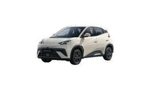
สีขาว
Shell White
Dynamic · Premium
สีภายใน: ดำ + เทา ทุกรุ่น
สีที่แสดงเป็นเพียงแนวทางเท่านั้น และอาจแตกต่างจากสีจริงเนื่องจากการพิมพ์
BYD PI-R MOTOR
LIFE IN MOTION
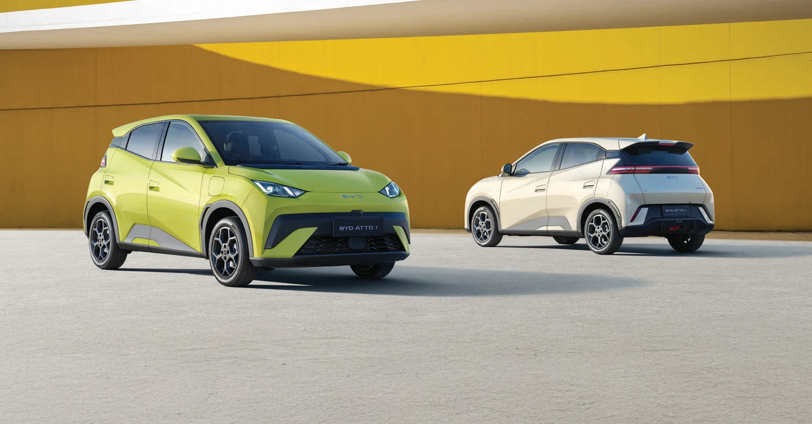
CONTACT · BYD PI-R MOTOR
ติดต่อเรา
พายอาร์ มอเตอร์
ข้อมูลรถและภาพจากโบรชัวร์ BYD ATTO 1 ที่ได้รับ · อุปกรณ์แตกต่างตามรุ่นย่อย · BYD ขอสงวนสิทธิ์ในการเปลี่ยนแปลงคุณสมบัติและอุปกรณ์มาตรฐาน